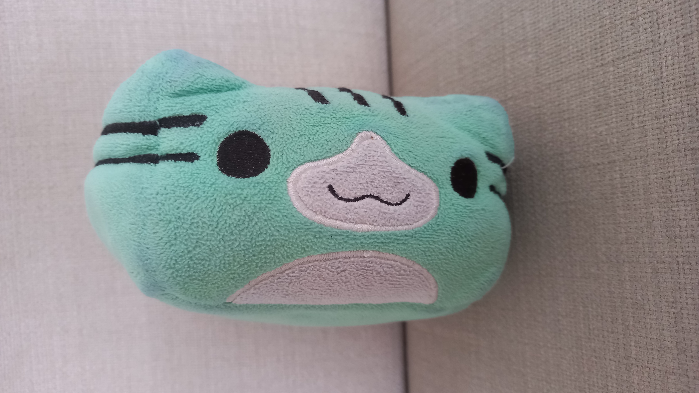

She is the rarest species of cat in the world! The Block Cat!
Juniplush was born in 2017, as a character from the popular game known as Geometry Dash!
Her birthday is April 2, 2017, SO CLOSE to April Fools! Luckily, she just missed it.
Her favourite colour is green, if you couldn't tell already.
2. She has three stripes on her head instead of two, which makes her EVEN more rare!
3. She's one of the best Geometry Dash players in the WORLD!
4. She is the youngest student in her class.
5. She has the same birthday as Reagan!
Her birthday is April 2, 2017, SO CLOSE to April Fools! Luckily, she just missed it.
Her favourite colour is green, if you couldn't tell already.
Fun Facts:
1. Block cats sleep sideways, which explains the picture in a nutshell.
2. She has three stripes on her head instead of two, which makes her EVEN more rare!
3. She's one of the best Geometry Dash players in the WORLD!
4. She is the youngest student in her class.
5. She has the same birthday as Reagan!